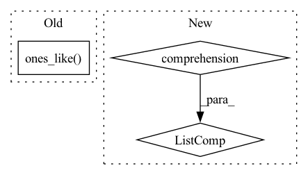

Pattern ID :1204
Before Change
@staticmethod
def backward(ctx, grad_output):
input, = ctx.saved_tensors
return grad_output * np.ones_like( input)
register("sum", Sum)
// ************* GEMM *************After Change
@staticmethod
def backward(ctx, grad_output):
input, axis = ctx.saved_tensors
return grad_output.reshape([1 if axis is None or i in axis else input.shape[i] for i in range(len(input.shape))] ) + np.zeros_like(input)
register("sum", Sum)
In pattern: SUPERPATTERN
Frequency: 3
Non-data size: 3
Instances Fragment ID: 6065487
Project Name: geohot/tinygrad
Commit Name: 58ccebd7cd7b1e90c91777f23941dbd9942914be
Time: 2020-12-07
Author: 65973015+marcelbischoff@users.noreply.github.com
File Name: tinygrad/ops.py
M Class Name: Sum
N Class Name: Sum
M Method Name: backward(2)
N Method Name: backward(2)
M Parent Class: Function
N Parent Class: Function
M File Name: tinygrad/ops.py
N File Name: tinygrad/ops.py
M Start Line: 70
M End Line: 70
N Start Line: 69
N End Line: 70
Before Change
pred_batch, y_batch = pred_batch.view(-1, pred_batch.shape[-1]), y_batch.view(-1, y_batch.shape[-1])
self.zero_grad()
y_batch.backward(torch.ones_like( y_batch) )
if self.K is None:
self._initialize_K(m=y_batch.shape[-1])
for pred, y in zip(pred_batch, y_batch):After Change
if self.reduction == "mean":
error = error.mean(dim=0).unsqueeze(0)
psi = [psi_i.mean(dim=0).unsqueeze(0) for psi_i in psi]
elif self.reduction == "sum":
error = error.sum(dim=0).unsqueeze(0)
psi = [psi_i.sum(dim=0).unsqueeze(0) for psi_i in psi]
elif self.reduction == "none": Fragment ID: 6065488
Project Name: neurotorch/neurotorch
Commit Name: 8419aed1db7d78e03c5884959079672a5525f279
Time: 2022-10-20
Author: 50332514+JeremieGince@users.noreply.github.com
File Name: src/neurotorch/learning_algorithms/weak_rls.py
M Class Name: WeakRLS
N Class Name: WeakRLS
M Method Name: _batch_step(2)
N Method Name: _batch_step(2)
M Parent Class: LearningAlgorithm
N Parent Class: LearningAlgorithm
M File Name: src/neurotorch/learning_algorithms/weak_rls.py
N File Name: src/neurotorch/learning_algorithms/weak_rls.py
M Start Line: 202
M End Line: 213
N Start Line: 218
N End Line: 235
Before Change
net = DummyModule()
_, targets, _ = next(iter(net.train_dataloader()))
preds = torch.ones_like( targets, dtype=torch.float) * 0.1
pl_map = AveragePrecision()(preds, targets)
After Change
targets = torch.tensor(
[[0, 1], [0, 1], [0, 1], [0, 1], [1, 0], [1, 0], [1, 0], [1, 0]]
)
preds = torch.tensor([[0.1, 0.9] for _ in range(8)] ).clone()
pl_map = AveragePrecision(num_classes=2)(preds, targets)
Fragment ID: 6065489
Project Name: lukashedegaard/ride
Commit Name: f5999d37b0145bccece1fc62606cf85d9f69cdf9
Time: 2021-05-17
Author: lukasxhedegaard@gmail.com
File Name: tests/test_metrics.py
M Class Name: AnonimousClass
N Class Name: AnonimousClass
M Method Name: test_MeanAveragePrecisionMetric(0)
N Method Name: test_MeanAveragePrecisionMetric(0)
M Parent Class:
N Parent Class:
M File Name: tests/test_metrics.py
N File Name: tests/test_metrics.py
M Start Line: 39
M End Line: 44
N Start Line: 42
N End Line: 49